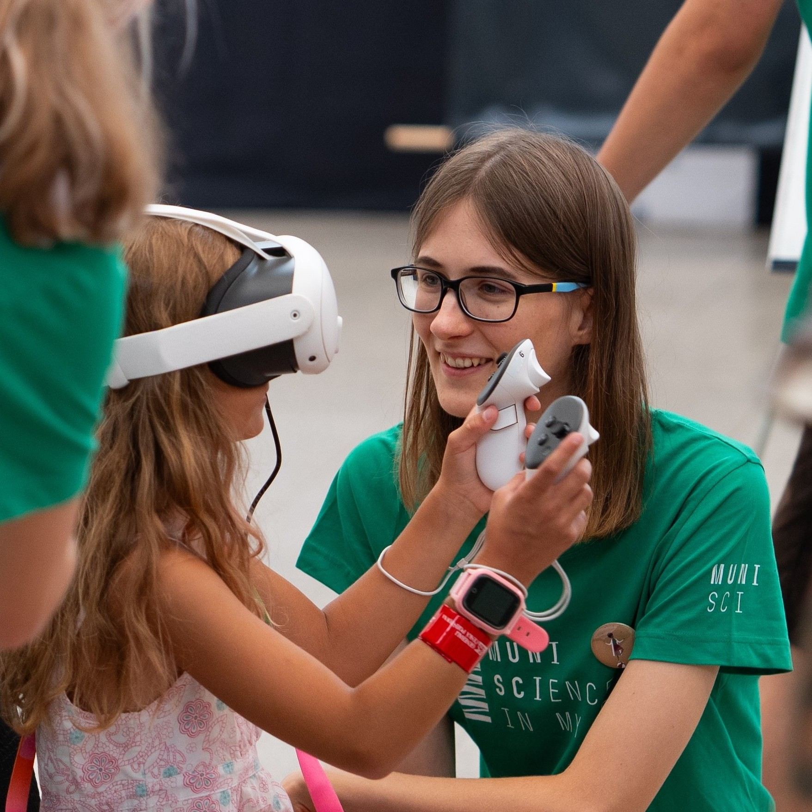
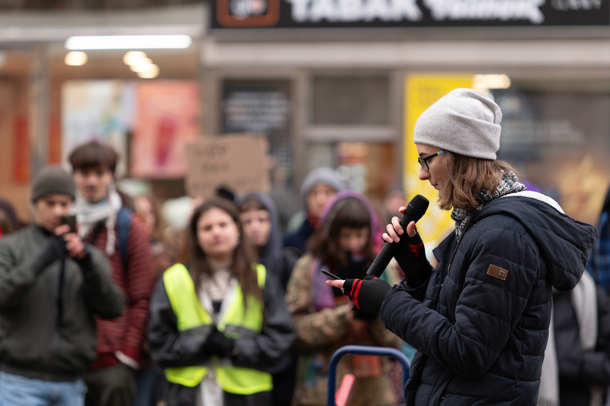

Hi there! Welcome to my webpage.
My name is Adriana and I'm a predoctoral researcher at the Instituto Galego de Física de Altas Enerxías at the University of Santiago de Compostela. I'm working in research group led by Marta Reina Campos, focused on hydronamical simulations of star clusters. My PhD project will focus on studying the impact of clustered stellar feedback on the evolution of galaxies, using a publicly available, flexible, massively-parallel, multi-physics simulation code GIZMO available on: GitHub.
During my master studies, I was working in Stellar populations research group led by Tereza Jerabkova. I was focusing on chemical evolution of high redshift galaxies. -- modelling nitrogen abundance of Gn-z11 using a publicly available code GalIMF available on GitHub.

| since 11/2026 | PhD Impact of Clustered Stellar Feedback on the Evolution of Galaxies Supervisor: Marta Reina Campos (Global Talent Junior Fellow, IGFAE) The Instituto Galego de Física de Altas Enerxías, University of Santiago de Compostela |
| 09/2024 - 06/2026 | MSc Investigating Stellar Populations and the Impact of a Variable Initial Mass Function in High-Redshift Galaxies Supervisor: Tereza Jerabkova (Assistant Professor, MUNI) Consultant: Zhiqiang Yan (Researcher, NJU) At Department of Theoretical Physics and Astrophysics, Faculty of Science, Masaryk University |
| 09/2021 - 06/2024 | BSc Building a Reissner-Nordström black hole from scratch Supervisor: Klaus Bering Larsen (Associate Professor, MUNI) At Department of Theoretical Physics and Astrophysics, Faculty of Science, Masaryk University |
| 06/2025-08/2025 | Research internship under the supervision of Dr. Tereza Jeřábková, focused on the chemical evolution of high-redshift galaxies
At Department of Theoretical Physics and Astrophysics, Faculty of Science, Masaryk University |
| since 03/2024 | Production of Conversations about Cosmos (department's science education videos)
At Department of Theoretical Physics and Astrophysics, Faculty of Science, Masaryk University |
| since 09/2022 | Science Communication, participation in event for public outreach, organising and designing science education activities
At Department of Theoretical Physics and Astrophysics, Faculty of Science, Masaryk University |
Email: zacharova@physics.muni.cz
GitHub: github.com/bshidvb
